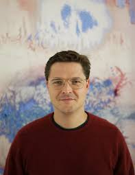
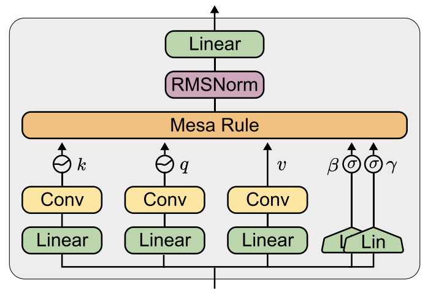
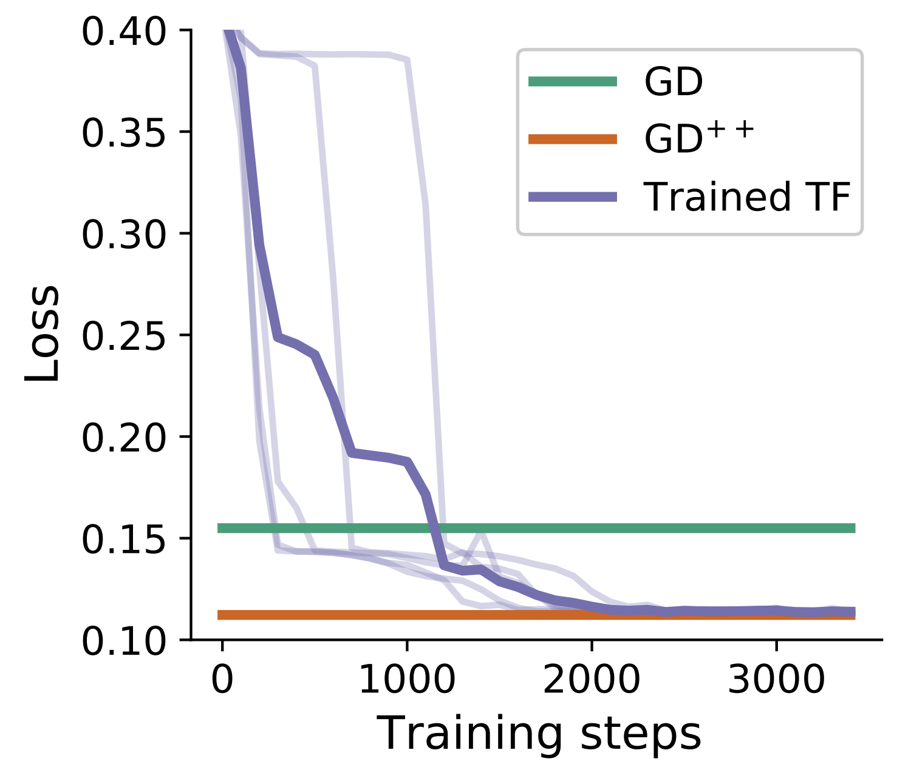

I am a research scientist at Google in Zurich, working with Blaise Agüera y Arcas and João Sacramento in the Paradigms of Intelligence Team. Until 2023, I was a PhD student supervised by Angelika Steger and João Sacramento at ETH Zurich.

My research focuses on how neural networks learn from data. Currently, I investigate how Transformer-based LLMs move beyond pattern matching to implement algorithmic solutions. This led to my work on mesa-optimization: the emergence of optimization algorithms within neural networks.
In recent work, we showed that gradient descent-based algorithms can be implemented within the activations of transformers, leading to the development of MesaNet.

